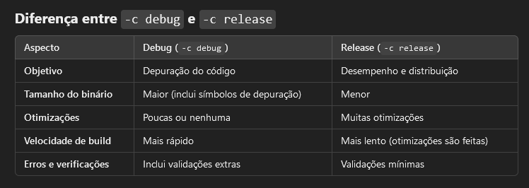

Swift
Impressions
-
See Godot - GDExtensions for the issues I had with the language.
-
It is a very solid language and seems good for beginners, but it doesn’t challenge me in any way and doesn’t seem to offer any advantage compared to the existing Python ecosystem.
-
Considering that the language doesn’t offer anything special, it’s not worth the loss of features and support that more popular languages have.
-
Obviously, not to mention that it is something immersed in the Apple environment, which leaves a bad taste.
-
The ecosystem seemed terrible, Windows support is weak and mostly neglected. I couldn’t get LSP to work, etc.
-
I got quite discouraged with the language, despite it being syntactically better than Kotlin.
About
-
Swift .
-
-
https://docs.swift.org/swift-book/documentation/the-swift-programming-language/properties/
-
-
Default: Internal.
-
Class, struct, and enum members are
internalby default, meaning they are only accessible within the same module.
-
Features
-
Static typing.
-
Supports OOP, has classes and methods.
-
The creator of LLVM created Swift. It is LLVM-based.
-
Opinions :
-
"Very similar to C#, but more modern."
-
"Kotlin with better error handling, worse STD, and slightly better tooling."
-
"I played around with Swift back when I used to use Mac and I have to say… Swift is the most sensible, sane and pleasant language I’ve ever used. Simple for easy beginner things yet gives all the features & efficiency you could want for serious applications. Shame it doesn’t really exist outside of Apple’s ecosystem."
-
SwiftPM
-
Swift comes bundled with the Swift Package Manager (SwiftPM) that manages the distribution of Swift code. It allows easy importing of other Swift packages into your applications and libraries.
Setup
Dependencies
-
[2025/01/09] Using version 6.0.3
-
[2025/01/23] Using version 5.10.1
-
Visual Studio.
-
Install VS Community and Desktop C++.
-
Windows SDK.
-
Besides installing, I had to add
C:\Program Files\Microsoft Visual Studio\2022\Community\VC\Tools\MSVC\14.42.34433\bin\Hostx64\x64to the global PATH environment variable. -
Maybe this comes with the VS installation.
-
-
CMake.
-
Downloaded version: cmake-3.31.3-windows-x86_64.msi.
-
-
Ninja.
-
Downloaded version: 1.12.1.
-
-
-
Enabled Windows Developer Mode.
-
Enabled long paths in Windows.
Installation
-
Installation path:
-
C:\Users\caior\AppData\Local\Programs\Swift
-
Package
-
Library
-
swift package init --type library
-
Windows Issues
-
The folder path on Windows 10 cannot have accented characters, otherwise it will fail.
-
Windows has a problem with very deep directory structures that the Swift Build system can produce, and this is compounded by the default location of files that you might have, something like
C:\Users\Users\migueldeicaza\Documents\GitHub\Experiments\MyGamesand you find yourself with odd errors. -
You should use the
substcommand in Windows to map a new drive to that path. -
The issue of shared libraries comes down to the extension name of shared libraries (you need to use
.dllinstead of.dylibor.so) when describing those in your extension file. -
You will also need to copy the Swift standard library DLLs. The default installer adds them to
C:/Users/[USER]/AppData/Local/Programs/Swift/Runtimes/[Swift Version]/usr/bin
Build
-
Debug:
-
swift build/swift build --configuration debug/swift build -c debug
-
-
Release:
-
swift build -c release
-
-
Debug vs Release
-
 .
-
Package.Swift
-
Package .
-
The most important part is about Dependencies and the
Package.resolvefile.-
Useful commands:
-
swift package clean -
swift package purge-cache -
swift package resolve
-
-
Useful tips:
-
Delete the Package.resolve file.
-
-
-
-
Package .
-
.package .
Dynamic
-
For a library, the output will be a
.dllfile. -
A dynamic package or dynamic framework is a module that is loaded dynamically at runtime.
-
Key characteristics:
-
Runtime loading : The framework code is loaded when the application runs, not at compile time.
-
Reusability : Can be shared among multiple processes or applications, as it is a separate binary.
-
Smaller final binary size : Since the framework is not embedded directly into the application binary, the final app size may be smaller.
-
Independent updates : The framework can be updated without recompiling the application that uses it.
-
Performance : May be slightly slower due to an additional runtime loading step.
-
-
Example use:
-
Used when the framework needs to be shared between multiple applications.
-
Large libraries that do not need to be embedded directly into the binary.
-
Static
-
For a library, the output will be a
.libfile. -
A static package or static framework is a module whose code is linked directly into the final application binary at compile time.
-
Key characteristics:
-
Compile-time loading : All framework code is embedded directly in the final binary during compilation.
-
Independence : The final binary includes everything needed, making it independent of external frameworks at runtime.
-
Larger final binary size : Because the framework code is embedded in the binary, the final app size increases.
-
Performance : Generally faster, as there is no additional runtime loading cost.
-
Updates : Any change in the framework requires recompilation of the application.
-
-
Example use:
-
Used in libraries that need to be fully integrated into the final binary.
-
Scenarios where performance is critical and simplicity in distribution is desired.
-
Difference between
.dll
and
.lib
in Windows context
-
.dll(Dynamic Link Library) :-
A dynamic library that can be loaded and linked at runtime.
-
Used by Godot to integrate extensions and expose the functions and classes created in the extension.
-
-
.lib(Static Library or Import Library) :-
Can be a static library (code embedded directly into the final binary) or an "import library" (used only as a reference to link the corresponding
.dll). -
Godot does not use
.libdirectly because a static.libmust be linked at the compilation of the main executable, and Godot does not recompile its core with the extension.
-
Memory
-
Garbage Collector via Reference Counting.
-
Rust-styled borrow system.
-
Encourages use of Structs.
Access Control
-
Default: Internal.
-
Class, struct, and enum members are
internalby default, meaning they are only accessible within the same module. -
Inside private extensions , members are treated as
private.
-
Nullability
Null Safety
-
Using
?allows the type to be null.let hello: String? = 'hi mom'-
This makes
hellonullable.
-
Null handling
-
Crashes :
func hit(enemy: Monster?, with weapon: Weapon) { if enemy.isAlive { enemy.health -= weapon.damage } }
Error Handling
-
A function indicates that it can throw an error by including the
throwskeyword in its declaration. When you call a function that can throw an error, you prepend thetrykeyword to the expression.func canThrowAnError() throws { // this function may or may not throw an error } -
When you call a function that can throw an error, you prepend the
trykeyword to the expression. -
Swift automatically propagates errors out of their current scope until they’re handled by a
catchclause.do { try canThrowAnError() // no error was thrown } catch { // an error was thrown } -
Example :
func makeASandwich() throws { // ... } do { try makeASandwich() eatASandwich() } catch SandwichError.outOfCleanDishes { washDishes() } catch SandwichError.missingIngredients(let ingredients) { buyGroceries(ingredients) }
precondition
// In the implementation of a subscript...
precondition(index > 0, "Index must be greater than zero.")
assert
let age = -3
assert(age >= 0, "A person's age can't be less than zero.")
// This assertion fails because -3 isn't >= 0.
guard
func hit(enemy: Monster?, with weapon: Weapon) {
guard let enemy else { return }
if enemy.isAlive {
enemy.health -= weapon.damage
}
}
if let
-
Extended version:
let myNumber = Int(possibleNumber)
// Here, myNumber is an optional integer
if let myNumber = myNumber {
// Here, myNumber is a non-optional integer
print("My number is \(myNumber)")
}
// Prints "My number is 123"
-
Simplified version:
-
Because this kind of code is so common, you can use a shorter spelling to unwrap an optional value: Write just the name of the constant or variable that you’re unwrapping. The new, unwrapped constant or variable implicitly uses the same name as the optional value.
if let myNumber { print("My number is \(myNumber)") } // Prints "My number is 123" -
-
You can include as many optional bindings and Boolean conditions in a single
ifstatement as you need to, separated by commas. If any of the values in the optional bindings arenilor any Boolean condition evaluates tofalse, the wholeifstatement’s condition is considered to befalse. The followingifstatements are equivalent:
if let firstNumber = Int("4"), let secondNumber = Int("42"), firstNumber < secondNumber && secondNumber < 100 {
print("\(firstNumber) < \(secondNumber) < 100")
}
// Prints "4 < 42 < 100"
if let firstNumber = Int("4") {
if let secondNumber = Int("42") {
if firstNumber < secondNumber && secondNumber < 100 {
print("\(firstNumber) < \(secondNumber) < 100")
}
}
}
// Prints "4 < 42 < 100"
-
Example :
func hit(enemy: Monster?, with weapon: Weapon) { if let enemy { if enemy.isAlive { enemy.health -= weapon.damage } } }-
“If the optional
Monsterreturned byenemycontains a value, then it is true".
func hit(enemy: Monster?, with weapon: Weapon) { if let new_enemy = enemy { if new_enemy.isAlive { new_enemy.health -= weapon.damage } } }-
“If the optional
Monsterreturned byenemycontains a value, set a new constant callednew_enemyto the value contained in the optional.”
-
Fallback
-
Another way to handle a missing value is to supply a default value using the nil-coalescing operator (
??). If the optional on the left of the??isn’tnil, that value is unwrapped and used. Otherwise, the value on the right of??is used. For example, the code below greets someone by name if one is specified, and uses a generic greeting when the name isnil.
let name: String? = nil
let greeting = "Hello, " + (name ?? "friend") + "!"
print(greeting)
// Prints "Hello, friend!"
Force Unwrapping
-
You can ignore the fact that the object might be nil, using the
!operator:var selected: String? func okPressed() { // I "know" 'selected' will never be null, let me use it. saveFile(selected!) } -
If it is
nil, it will crash at runtime, so!andfatalErrorare equivalent.let possibleNumber = "123" let convertedNumber = Int(possibleNumber) let number = convertedNumber! guard let number = convertedNumber else { fatalError("The number was invalid") }
Implicity Unwrap
-
You can think of an implicitly unwrapped optional as giving permission for the optional to be force-unwrapped if needed.
-
Usage :
-
Implicitly unwrapped optionals are useful when an optional’s value is confirmed to exist immediately after the optional is first defined and can definitely be assumed to exist at every point thereafter.
-
An implicitly unwrapped optional is a normal optional behind the scenes, but can also be used like a non-optional value, without the need to unwrap the optional value each time it’s accessed.
-
-
Cautions :
-
If an implicitly unwrapped optional is
niland you try to access its wrapped value, you’ll trigger a runtime error. -
The result is exactly the same as if you write an exclamation point to force unwrap a normal optional that doesn’t contain a value.
-
-
Creation :
-
You write an implicitly unwrapped optional by placing an exclamation point (
String!) rather than a question mark (String?) after the type that you want to make optional. -
Rather than placing an exclamation point after the optional’s name when you use it, you place an exclamation point after the optional’s type when you declare it.
-
-
Differences between Implicit and Explicit :
let possibleString: String? = "An optional string." let forcedString: String = possibleString! // Requires explicit unwrapping let assumedString: String! = "An implicitly unwrapped optional string." let implicitString: String = assumedString // Unwrapped automatically
Overflow
-
Crashes :
var score = Int.max score = score + 1 // Crashes due to overflow. -
Ignoring with
&(yolo operator) :var score = Int.max score = score &+ 1 // Does not crash, but overflows (the number flips and becomes negative).
Concurrency
var a = [1, 2, 3, 4, 5]
Task {
print(a.count)
}
a.append(10) // Gives a warning for trying to modify something in a "race condition".
Debug
Comments
// This is a comment.
/* This is also a comment
but is written over multiple lines. */
Basics
-
Code starts in the global scope, just like in Python.
Use of
;
-
Swift doesn’t require you to write a semicolon (
;) after each statement in your code, although you can do so if you wish. -
Semicolons are required if you want to write multiple separate statements on a single line:
let cat = "🐱"; print(cat)
// Prints "🐱"
Keywords
let (constant)
-
Not modifiable at any time
let a = 10
let a = [10, 20, 30]
a.append(10) // Crash.
var
-
Modifiable at any time
var a = 10
Multiple declaration
var x = 0.0, y = 0.0, z = 0.0
var red, green, blue: Double
Operations
Numeric Operations
Arithmetic
-
Addition
-
+
-
-
Subtraction
-
-
-
-
Multiplication
-
*
-
-
Division
-
/
-
-
Remainder
-
%
-
Compound
-
All operators support Operation + Assignment:
-
counter += 1
-
Logical Comparisons
Basic
-
Equal
-
==
-
-
Not equal
-
!=
-
-
Greater
-
>
-
-
Less
-
<
-
-
AND
-
&&
-
-
OR
-
||
-
-
NOT
-
!
-
-
Identical:
-
Check whether two constants or variables refer to the same single instance (class).
-
===
-
-
Not-identical:
-
Check whether two constants or variables refer to a different instance (class).
-
!==
-
Bitwise
-
AND
-
&
-
-
OR
-
|
-
-
XOR
-
^
-
-
L SHIFT
-
<<
-
-
R SHIFT
-
>>
-
Types
Type Inference
-
Equivalent:
let hello = 'hi mom' let hello: String = 'hi mom'
Value Type
-
It's a type whose value is copied when it’s assigned to a variable or constant, or when it’s passed to a function.
-
Value Types :
-
Integers
-
Floating-point numbers
-
Booleans
-
Strings
-
Arrays
-
Dictionaries
-
Structs
-
All basic types are implemented as structures behind the scenes.
-
-
Enums
-
-
Ex1 :
struct Resolution { var width = 0 var height = 0 } let hd = Resolution(width: 1920, height: 1080) var cinema = hd-
Because
Resolutionis a structure, a copy of the existing instance is made, and this new copy is assigned tocinema. Even thoughhdandcinemanow have the same width and height, they’re two completely different instances behind the scenes.
-
Reference Types
-
Reference types are not copied when they’re assigned to a variable or constant, or when they’re passed to a function. Rather than a copy, a reference to the same existing instance is used.
-
Reference Types :
-
Classes
-
-
Ex1 :
let tenEighty = VideoMode()
tenEighty.resolution = hd
tenEighty.interlaced = true
tenEighty.name = "1080i"
tenEighty.frameRate = 25.0
let alsoTenEighty = tenEighty
alsoTenEighty.frameRate = 30.0
print("The frameRate property of tenEighty is now \(tenEighty.frameRate)")
// Prints "The frameRate property of tenEighty is now 30.0". Both are 30.0.
Booleans
let orangesAreOrange = true
let turnipsAreDelicious = false
-
Not allowed :
let i = 1 if i { // this example will not compile, and will report an error } -
Allowed :
let i = 1 if i == 1 { // this example will compile successfully }
Numbers
Int
-
Types :
-
Int8 -
Int16 -
Int32 -
Int64 -
UInt8 -
UInt16 -
UInt32 -
UInt64
-
-
Generic :
-
In most cases, you don’t need to pick a specific size of integer to use in your code. Swift provides an additional integer type,
Int/UInt, which has the same size as the current platform’s native word size:-
On a 32-bit platform:
-
Int/UIntis the same size asInt32/UInt32.
-
-
On a 64-bit platform:
-
Int/UIntis the same size asInt64/UInt64.
-
-
-
Unless you need to work with a specific size of integer, always use
Intfor integer values in your code. This aids code consistency and interoperability. -
Even on 32-bit platforms,
Intcan store any value between-2,147,483,648and2,147,483,647, and is large enough for many integer ranges. -
Note about UInt :
-
Use
UIntonly when you specifically need an unsigned integer type with the same size as the platform’s native word size. If this isn’t the case,Intis preferred, even when the values to be stored are known to be nonnegative. A consistent use ofIntfor integer values aids code interoperability, avoids the need to convert between different number types, and matches integer type inference, as described in Type Safety and Type Inference .
-
-
-
Bounds :
-
UInt8.min -
UInt8.max
-
Float
-
Represents a 32-bit floating-point number.
-
Can have a precision as little as 6 decimal digits.
Double
-
Represents a 64-bit floating-point number.
-
Has a precision of at least 15 decimal digits.
-
In situations where either type would be appropriate,
Doubleis preferred.
Numeric Literals
let decimalInteger = 17
let binaryInteger = 0b10001 // 17 in binary notation
let octalInteger = 0o21 // 17 in octal notation
let hexadecimalInteger = 0x11 // 17 in hexadecimal notation
-
Decimals:
-
1.25e2means 1.25 x 10², or125.0. -
1.25e-2means 1.25 x 10⁻², or0.0125.
-
-
Hexadecimals:
-
0xFp2means 15 x 2², or60.0. -
0xFp-2means 15 x 2⁻², or3.75.
-
Formatting
let paddedDouble = 000123.456
let oneMillion = 1_000_000
let justOverOneMillion = 1_000_000.000_000_1
String
Literals
-
Singleline :
let someString = "Some string literal value" -
Multiline :
let quotation = """ The White Rabbit put on his spectacles. "Where shall I begin, please your Majesty?" he asked. "Begin at the beginning," the King said gravely, "and go on till you come to the end; then stop." """let singleLineString = "These are the same." let multilineString = """ These are the same. """let softWrappedQuotation = """ The White Rabbit put on his spectacles. "Where shall I begin, \ please your Majesty?" he asked. "Begin at the beginning," the King said gravely, "and go on \ till you come to the end; then stop." """-
If you’re using multiline string literals to build up the lines of a longer string, you want every line in the string to end with a line break, including the last line.
let badStart = """ one two """ let end = """ three """ print(badStart + end) // Prints two lines: // one // twothree let goodStart = """ one two """ print(goodStart + end) // Prints three lines: // one // two // three
-
Concatenation
"hello, " + "world" // equals "hello, world"
Interpolation
let multiplier = 3
let message = "\(multiplier) times 2.5 is \(Double(multiplier) * 2.5)"
// message is "3 times 2.5 is 7.5"
Chars
for character in "Dog!🐶" {
print(character)
}
let exclamationMark: Character = "!"
let catCharacters: [Character] = ["C", "a", "t", "!", "🐱"]
let catString = String(catCharacters)
print(catString)
// Prints "Cat!🐱"
Special Chars
-
\0(null character) -
\\(backslash) -
\t(horizontal tab) -
\n(line feed) -
\r(carriage return) -
\"(double quotation mark) -
\'(single quotation mark) -
\u{n}, where n is a 1–8 digit hexadecimal number. -
How to avoid using special chars :
print(#"Write an interpolated string in Swift using \(multiplier)."#) // Prints "Write an interpolated string in Swift using \(multiplier)."let threeMoreDoubleQuotationMarks = #""" Here are three more double quotes: """ "\""# // remove the backslash
Manipulation
-
Length:
let unusualMenagerie = "Koala 🐨, Snail 🐌, Penguin 🐧, Dromedary 🐪" print("unusualMenagerie has \(unusualMenagerie.count) characters") // Prints "unusualMenagerie has 40 characters" -
Insert and Remove:
var welcome = "hello" welcome.insert("!", at: welcome.endIndex) // welcome now equals "hello!" welcome.insert(contentsOf: " there", at: welcome.index(before: welcome.endIndex)) // welcome now equals "hello there!" -
Subranges:
welcome.remove(at: welcome.index(before: welcome.endIndex)) // welcome now equals "hello there" let range = welcome.index(welcome.endIndex, offsetBy: -6)..<welcome.endIndex welcome.removeSubrange(range) // welcome now equals "hello" -
Substrings:
let greeting = "Hello, world!" let index = greeting.firstIndex(of: ",") ?? greeting.endIndex let beginning = greeting[..<index] // beginning is "Hello" // Convert the result to a String for long-term storage. let newString = String(beginning) -
Prefixes:
let romeoAndJuliet = [ "Act 1 Scene 1: Verona, A public place", "Act 1 Scene 2: Capulet's mansion", "Act 1 Scene 3: A room in Capulet's mansion", ] // PREFIX var act1SceneCount = 0 for scene in romeoAndJuliet { if scene.hasPrefix("Act 1 ") { act1SceneCount += 1 } } print("There are \(act1SceneCount) scenes in Act 1") // Prints "There are 5 scenes in Act 1" // SUFFIX var mansionCount = 0 var cellCount = 0 for scene in romeoAndJuliet { if scene.hasSuffix("Capulet's mansion") { mansionCount += 1 } else if scene.hasSuffix("Friar Lawrence's cell") { cellCount += 1 } } print("\(mansionCount) mansion scenes; \(cellCount) cell scenes") // Prints "6 mansion scenes; 2 cell scenes"
Tuples
Creation
-
Tuples group multiple values into a single compound value.
-
The values within a tuple can be of any type and don’t have to be of the same type as each other.
let http404Error = (404, "Not Found") // http404Error is of type (Int, String), and equals (404, "Not Found") -
If you name the elements in a tuple, you can use the element names to access the values of those elements:
let http200Status = (statusCode: 200, description: "OK") -
Tuples are particularly useful as the return values of functions. A function that tries to retrieve a web page might return the
(Int, String)tuple type to describe the success or failure of the page retrieval. By returning a tuple with two distinct values, each of a different type, the function provides more useful information about its outcome than if it could only return a single value of a single type.
Access
-
Index :
print("The status code is \(http404Error.0)") // Prints "The status code is 404" print("The status message is \(http404Error.1)") // Prints "The status message is Not Found" -
Name (if defined):
print("The status code is \(http200Status.statusCode)") // Prints "The status code is 200" print("The status message is \(http200Status.description)") // Prints "The status message is OK" -
Destructuring / Decomposition :
let (statusCode, statusMessage) = http404Error print("The status code is \(statusCode)") // Prints "The status code is 404" print("The status message is \(statusMessage)") // Prints "The status message is Not Found"-
If you only need some of the tuple’s values, ignore parts of the tuple with an underscore (
_) when you decompose the tuple:let (justTheStatusCode, _) = http404Error print("The status code is \(justTheStatusCode)") // Prints "The status code is 404"
-
Logical Comparisons in Tuples
-
You can compare two tuples if they have the same type and the same number of values. Tuples are compared from left to right, one value at a time, until the comparison finds two values that aren’t equal.
(1, "zebra") < (2, "apple") // true because 1 is less than 2; "zebra" and "apple" aren't compared
(3, "apple") < (3, "bird") // true because 3 is equal to 3, and "apple" is less than "bird"
(4, "dog") == (4, "dog") // true because 4 is equal to 4, and "dog" is equal to "dog"
Arrays
Creation
var someInts: [Int] = []
print("someInts is of type [Int] with \(someInts.count) items.")
// Prints "someInts is of type [Int] with 0 items."
var threeDoubles = Array(repeating: 0.0, count: 3)
// threeDoubles is of type [Double], and equals [0.0, 0.0, 0.0]
var sixDoubles = threeDoubles + anotherThreeDoubles
-
New array of Strings, via the content of a Dictionary:
let airportCodes = [String](airports.keys) // airportCodes is ["LHR", "YYZ"] let airportNames = [String](airports.values) // airportNames is ["London Heathrow", "Toronto Pearson"]
Access
var firstItem = shoppingList[0]
// firstItem is equal to "Eggs"
Modification
-
You can use subscript syntax to change an existing value at a given index:
shoppingList[0] = "Six eggs"
// the first item in the list is now equal to "Six eggs" rather than "Eggs"
shoppingList[4...6] = ["Bananas", "Apples"]
// shoppingList now contains 6 items
Insert
-
Via
append:shoppingList.append("Flour") // shoppingList now contains 3 items, and someone is making pancakes -
Via
insert:shoppingList.insert("Maple Syrup", at: 0) // shoppingList now contains 7 items // "Maple Syrup" is now the first item in the list -
Via
+=:shoppingList += ["Baking Powder"] // shoppingList now contains 4 items shoppingList += ["Chocolate Spread", "Cheese", "Butter"] // shoppingList now contains 7 items
Remove
-
Via
remove:let mapleSyrup = shoppingList.remove(at: 0) // the item that was at index 0 has just been removed // shoppingList now contains 6 items, and no Maple Syrup // the mapleSyrup constant is now equal to the removed "Maple Syrup" string -
removeLast.
Other common methods
-
isEmpty
Set
-
A set stores distinct values of the same type in a collection with no defined ordering.
-
Uses :
-
You can use a set instead of an array when the order of items isn’t important
-
Or when you need to ensure that an item only appears once .
-
-
My interpretation :
-
It's a "dictionary that only has keys, no values" .
-
Creation
var letters = Set<Character>()
print("letters is of type Set<Character> with \(letters.count) items.")
// Prints "letters is of type Set<Character> with 0 items."
var favoriteGenres: Set<String> = ["Rock", "Classical", "Hip hop"]
// favoriteGenres has been initialized with three initial items
var favoriteGenres: Set = ["Rock", "Classical", "Hip hop"]
Modification
letters.insert("a")
// letters now contains 1 value of type Character
letters = []
// letters is now an empty set, but is still of type Set<Character>
Operations
-
Use the
intersection(_:)method to create a new set with only the values common to both sets. -
Use the
symmetricDifference(_:)method to create a new set with values in either set, but not both. -
Use the
union(_:)method to create a new set with all of the values in both sets. -
Use the
subtracting(_:)method to create a new set with values not in the specified set.
Logic
-
Contains :
if favoriteGenres.contains("Funk") {
print("I get up on the good foot.")
} else {
print("It's too funky in here.")
}
// Prints "It's too funky in here."
-
Use the “is equal” operator (
==) to determine whether two sets contain all of the same values. -
Use the
isSubset(of:)method to determine whether all of the values of a set are contained in the specified set. -
Use the
isSuperset(of:)method to determine whether a set contains all of the values in a specified set. -
Use the
isStrictSubset(of:)orisStrictSuperset(of:)methods to determine whether a set is a subset or superset, but not equal to, a specified set. -
Use the
isDisjoint(with:)method to determine whether two sets have no values in common.
Dictionary
Creation
var namesOfIntegers: [Int: String] = [:]
// namesOfIntegers is an empty [Int: String] dictionary
namesOfIntegers[16] = "sixteen"
// namesOfIntegers now contains 1 key-value pair
namesOfIntegers = [:]
// namesOfIntegers is once again an empty dictionary of type [Int: String]
var airports: [String: String] = ["YYZ": "Toronto Pearson", "DUB": "Dublin"]
var airports = ["YYZ": "Toronto Pearson", "DUB": "Dublin"]
Modification
-
Insert / Modify :
airports["LHR"] = "London" // the airports dictionary now contains 3 items -
Remove :
airports["APL"] = nil // APL has now been removed from the dictionary -
updateValue-
Returns the old value after performing an update.
if let oldValue = airports.updateValue("Dublin Airport", forKey: "DUB") { print("The old value for DUB was \(oldValue).") } // Prints "The old value for DUB was Dublin." -
-
removeValue-
Removes the key-value pair if it exists and returns the removed value, or returns
nilif no value existed
if let removedValue = airports.removeValue(forKey: "DUB") { print("The removed airport's name is \(removedValue).") } else { print("The airports dictionary doesn't contain a value for DUB.") } // Prints "The removed airport's name is Dublin Airport." -
Optionals
-
An optional represents two possibilities: Either there is a value of a specified type, and you can unwrap the optional to access that value, or there isn’t a value at all.
Creation
-
To write an optional type, you write a question mark (
?) after the name of the type that the optional contains.-
For example, the type of an optional
IntisInt?.
-
let possibleNumber = "123"
let convertedNumber = Int(possibleNumber)
// As the conversion `Int()` can't always be made, the returned type for convertedNumber is "optional Int".
Nil
var serverResponseCode: Int? = 404
// serverResponseCode contains an actual Int value of 404
serverResponseCode = nil
// serverResponseCode now contains no value
Default with
?
-
If you define an optional variable without providing a default value, the variable is automatically set to
nil:
var surveyAnswer: String?
// surveyAnswer is automatically set to nil
What to do when it is
nil
-
Skip the code that operates on the value when it’s
nil. -
? Propagate the
nilvalue, by returningnilor using the?.operator described in Optional Chaining . -
Provide a fallback value, using the
??operator. -
Stop program execution, using the
!operator.
Control Flow
Conditionals: if / else
Basic
temperatureInFahrenheit = 90
if temperatureInFahrenheit <= 32 {
print("It's very cold. Consider wearing a scarf.")
} else if temperatureInFahrenheit >= 86 {
print("It's really warm. Don't forget to wear sunscreen.")
} else {
print("It's not that cold. Wear a T-shirt.")
}
// Prints "It's really warm. Don't forget to wear sunscreen."
If Expressions
let weatherAdvice = if temperatureInCelsius <= 0 {
"It's very cold. Consider wearing a scarf."
} else if temperatureInCelsius >= 30 {
"It's really warm. Don't forget to wear sunscreen."
} else {
"It's not that cold. Wear a T-shirt."
}
print(weatherAdvice)
// Prints "It's not that cold. Wear a T-shirt."
Checking
nil
in an Optional
let possibleNumber = "123"
let convertedNumber = Int(possibleNumber)
if convertedNumber != nil {
print("convertedNumber contains some integer value.")
}
Ternary
-
Without Ternary :
let contentHeight = 40 let hasHeader = true let rowHeight: Int if hasHeader { rowHeight = contentHeight + 50 } else { rowHeight = contentHeight + 20 } // rowHeight is equal to 90 -
With Ternary :
let contentHeight = 40 let hasHeader = true let rowHeight = contentHeight + (hasHeader ? 50 : 20) // "if hasHeader, 50, else, 20" // rowHeight is equal to 90
Conditionals: match
-
Every
switchstatement must be exhaustive .
Match
-
Basic :
let someCharacter: Character = "z" switch someCharacter { case "a": print("The first letter of the Latin alphabet") case "z": print("The last letter of the Latin alphabet") default: print("Some other character") } // Prints "The last letter of the Latin alphabet" -
Range :
let approximateCount = 62 let countedThings = "moons orbiting Saturn" let naturalCount: String switch approximateCount { case 0: naturalCount = "no" case 1..<5: naturalCount = "a few" case 5..<12: naturalCount = "several" case 12..<100: naturalCount = "dozens of" case 100..<1000: naturalCount = "hundreds of" default: naturalCount = "many" } print("There are \(naturalCount) \(countedThings).") // Prints "There are dozens of moons orbiting Saturn." -
Tuples :
let somePoint = (1, 1) switch somePoint { case (0, 0): print("\(somePoint) is at the origin") case (_, 0): print("\(somePoint) is on the x-axis") case (0, _): print("\(somePoint) is on the y-axis") case (-2...2, -2...2): print("\(somePoint) is inside the box") default: print("\(somePoint) is outside of the box") } // Prints "(1, 1) is inside the box"
Multi-Match
let anotherCharacter: Character = "a"
switch anotherCharacter {
case "a", "A":
print("The letter A")
default:
print("Not the letter A")
}
// Prints "The letter A"
Match Expression
let anotherCharacter: Character = "a"
let message = switch anotherCharacter {
case "a":
"The first letter of the Latin alphabet"
case "z":
"The last letter of the Latin alphabet"
default:
"Some other character"
}
print(message)
// Prints "The first letter of the Latin alphabet"
Value Binding
-
A
switchcase can name the value or values it matches to temporary constants or variables, for use in the body of the case.let anotherPoint = (2, 0) switch anotherPoint { case (let x, 0): print("on the x-axis with an x value of \(x)") case (0, let y): print("on the y-axis with a y value of \(y)") case let (x, y): print("somewhere else at (\(x), \(y))") } // Prints "on the x-axis with an x value of 2" -
Can be used with
wherelet yetAnotherPoint = (1, -1) switch yetAnotherPoint { case let (x, y) where x == y: print("(\(x), \(y)) is on the line x == y") case let (x, y) where x == -y: print("(\(x), \(y)) is on the line x == -y") case let (x, y): print("(\(x), \(y)) is just some arbitrary point") } // Prints "(1, -1) is on the line x == -y"
Fallthrough
let integerToDescribe = 5
var description = "The number \(integerToDescribe) is"
switch integerToDescribe {
case 2, 3, 5, 7, 11, 13, 17, 19:
description += " a prime number, and also"
fallthrough
default:
description += " an integer."
}
print(description)
// Prints "The number 5 is a prime number, and also an integer."
Loops: For
Keywords
-
Classic:
-
continue -
break
-
Ranges
-
Two-sided Ranges :
-
Closed :
-
Defines a range that runs from
atob, and includes the valuesaandb:
for index in 1...5 { print("\(index) times 5 is \(index * 5)") } -
-
Half-Opened :
-
Defines a range that runs from
atob, but doesn’t includeb.
let names = ["Anna", "Alex", "Brian", "Jack"] let count = names.count for i in 0..<count { print("Person \(i + 1) is called \(names[i])") } -
-
-
One-sided Ranges :
-
Closed :
-
Continue as far as possible in one direction
// Includes all the elements of an array from index 2 to the end of the array. for name in names[2...] { print(name) } // Includes all the elements of an array from index 0 to index 2, including index 2. for name in names[...2] { print(name) } -
-
Half-Opened :
for name in names[..<2] { print(name) }
-
Iterating
-
Array :
for (index, value) in shoppingList.enumerated() { print("Item \(index + 1): \(value)") } // Item 1: Six eggs // Item 2: Milk // Item 3: Flour // Item 4: Baking Powder // Item 5: Bananas -
Dictionary :
for (airportCode, airportName) in airports { print("\(airportCode): \(airportName)") } // LHR: London Heathrow // YYZ: Toronto Pearsonfor airportCode in airports.keys { print("Airport code: \(airportCode)") } // Airport code: LHR // Airport code: YYZ for airportName in airports.values { print("Airport name: \(airportName)") } // Airport name: London Heathrow // Airport name: Toronto Pearson
Other Iteration Types
-
Ignoring the iteration value:
let base = 3 let power = 10 var answer = 1 for _ in 1...power { answer *= base } print("\(base) to the power of \(power) is \(answer)") // Prints "3 to the power of 10 is 59049" -
With intervals:
let minuteInterval = 5 for tickMark in stride(from: 0, to: minutes, by: minuteInterval) { // render the tick mark every 5 minutes (0, 5, 10, 15 ... 45, 50, 55) }
Loops: While
var square = 0
var diceRoll = 0
while square < finalSquare {
// roll the dice
diceRoll += 1
if diceRoll == 7 { diceRoll = 1 }
// move by the rolled amount
square += diceRoll
if square < board.count {
// if we're still on the board, move up or down for a snake or a ladder
square += board[square]
}
}
print("Game over!")
Loops: Repeat-While
Differences
-
Performs a single pass through the loop block first, before considering the loop’s condition.
repeat {
// move up or down for a snake or ladder
square += board[square]
// roll the dice
diceRoll += 1
if diceRoll == 7 { diceRoll = 1 }
// move by the rolled amount
square += diceRoll
} while square < finalSquare
print("Game over!")
Deferred
var score = 1
if score < 10 {
defer {
print(score)
}
score += 5
}
// Prints "6"
var score = 3
if score < 100 {
score += 100
defer {
score -= 100
}
// Other code that uses the score with its bonus goes here.
print(score)
}
// Prints "103"
if score < 10 {
defer {
print(score)
}
defer {
print("The score is:")
}
score += 5
}
// Prints "The score is:"
// Prints "6"
Functions
Classic Functions
Basic
func greeting(for person: String) -> String {
"Hello, " + person + "!"
}
print(greeting(for: "Dave"))
// Prints "Hello, Dave!"
func anotherGreeting(for person: String) -> String {
return "Hello, " + person + "!"
}
print(anotherGreeting(for: "Dave"))
// Prints "Hello, Dave!"
func greet(person: String) -> String {
let greeting = "Hello, " + person + "!"
return greeting
}
print(greet("Dave"))
// Prints "Hello, Dave!"
func greet(person: String) {
print("Hello, \(person)!")
}
greet(person: "Dave")
// Prints "Hello, Dave!"
Mutability: inout
-
Function parameters are constants by default. Trying to change the value of a function parameter from within the body of that function results in a compile-time error.
-
If you want a function to modify a parameter’s value, and you want those changes to persist after the function call has ended, define that parameter as an in-out parameter instead.
func swapTwoInts(_ a: inout Int, _ b: inout Int) {
let temporaryA = a
a = b
b = temporaryA
}
var someInt = 3
var anotherInt = 107
swapTwoInts(&someInt, &anotherInt)
print("someInt is now \(someInt), and anotherInt is now \(anotherInt)")
// Prints "someInt is now 107, and anotherInt is now 3"
-
Note :
-
In-out parameters can’t have default values, and variadic parameters can’t be marked as
inout.
-
Return: Multiple returns
func minMax(array: [Int]) -> (min: Int, max: Int) {
var currentMin = array[0]
var currentMax = array[0]
for value in array[1..<array.count] {
if value < currentMin {
currentMin = value
} else if value > currentMax {
currentMax = value
}
}
return (currentMin, currentMax)
}
let bounds = minMax(array: [8, -6, 2, 109, 3, 71])
print("min is \(bounds.min) and max is \(bounds.max)")
// Prints "min is -6 and max is 109"
-
Can be optional:
func minMax(array: [Int]) -> (min: Int, max: Int)? { if array.isEmpty { return nil } var currentMin = array[0] var currentMax = array[0] for value in array[1..<array.count] { if value < currentMin { currentMin = value } else if value > currentMax { currentMax = value } } return (currentMin, currentMax) }
Return: Ignoring the return
-
The return value of a function can be ignored when it’s called:
func printAndCount(string: String) -> Int {
print(string)
return string.count
}
let _ = printAndCount(string: "Caio")
Parameters: Order
-
Using
_in a function allows positional arguments, as inwhatsUp('jeff', emoji: 'foguinho').
Parameters: Default
func someFunction(parameterWithoutDefault: Int, parameterWithDefault: Int = 12) {
// If you omit the second argument when calling this function, then
// the value of parameterWithDefault is 12 inside the function body.
}
someFunction(parameterWithoutDefault: 3, parameterWithDefault: 6) // parameterWithDefault is 6
someFunction(parameterWithoutDefault: 4) // parameterWithDefault is 12
Parameters: Labels
-
If a parameter has an argument label, the argument must be labeled when you call the function.
func greeting(for person: String) -> String {
"Hello, " + person + "!"
}
print(greeting(for: "Dave"))
// Prints "Hello, Dave!"
func anotherGreeting(for person: String) -> String {
return "Hello, " + person + "!"
}
print(anotherGreeting(for: "Dave"))
// Prints "Hello, Dave!"
-
Omitting the label:
func someFunction(_ firstParameterName: Int, secondParameterName: Int) { // In the function body, firstParameterName and secondParameterName // refer to the argument values for the first and second parameters. } someFunction(1, secondParameterName: 2)
Parameters: Variadic
func arithmeticMean(_ numbers: Double...) -> Double {
var total: Double = 0
for number in numbers {
total += number
}
return total / Double(numbers.count)
}
arithmeticMean(1, 2, 3, 4, 5)
// returns 3.0, which is the arithmetic mean of these five numbers
arithmeticMean(3, 8.25, 18.75)
// returns 10.0, which is the arithmetic mean of these three numbers
Function as Arguments / Function Types
-
Functions are 'first-class objects'.
-
"
(Int, Int) -> Int":func addTwoInts(_ a: Int, _ b: Int) -> Int { return a + b }let anotherMathFunction = addTwoInts // anotherMathFunction is inferred to be of type (Int, Int) -> Int -
"
() -> Void":func printHelloWorld() { print("hello, world") } -
Ex1 :
var mathFunction: (Int, Int) -> Int = addTwoInts print("Result: \(mathFunction(2, 3))") // Prints "Result: 5"func printMathResult(_ mathFunction: (Int, Int) -> Int, _ a: Int, _ b: Int) { print("Result: \(mathFunction(a, b))") } printMathResult(addTwoInts, 3, 5) // Prints "Result: 8" -
Ex2 :
func stepForward(_ input: Int) -> Int { return input + 1 } func stepBackward(_ input: Int) -> Int { return input - 1 } func chooseStepFunction(backward: Bool) -> (Int) -> Int { return backward ? stepBackward : stepForward } var currentValue = 3 let moveNearerToZero = chooseStepFunction(backward: currentValue > 0) // moveNearerToZero now refers to the stepBackward() function -
Ex3 :
func backward(_ s1: String, _ s2: String) -> Bool { return s1 > s2 } var reversedNames = names.sorted(by: backward) // reversedNames is equal to ["Ewa", "Daniella", "Chris", "Barry", "Alex"]
Nested Functions
-
Nested functions are hidden from the outside world by default.
func chooseStepFunction(backward: Bool) -> (Int) -> Int {
func stepForward(input: Int) -> Int { return input + 1 }
func stepBackward(input: Int) -> Int { return input - 1 }
return backward ? stepBackward : stepForward
}
-
Can be returned as a parameter to be accessed outside the function.
Closures
Ways to Write
reversedNames = names.sorted(by: { (s1: String, s2: String) -> Bool in
return s1 > s2
})
reversedNames = names.sorted(by: { (s1: String, s2: String) -> Bool in return s1 > s2 } )
reversedNames = names.sorted(by: { s1, s2 in return s1 > s2 } )
reversedNames = names.sorted(by: { s1, s2 in s1 > s2 } )
reversedNames = names.sorted(by: { $0 > $1 } ) // shorthanded
reversedNames = names.sorted(by: >) // Using the default implementation of the `>` symbol
When the Closure is Called
-
An autoclosure is a closure that’s automatically created to wrap an expression that’s being passed as an argument to a function.
-
It doesn’t take any arguments, and when it’s called, it returns the value of the expression that’s wrapped inside of it.
-
An autoclosure lets you delay evaluation because the code inside isn’t run until you call the closure.
var customersInLine = ["Chris", "Alex", "Ewa", "Barry", "Daniella"]
print(customersInLine.count)
// Prints "5"
let customerProvider = { customersInLine.remove(at: 0) }
print(customersInLine.count)
// Prints "5"
print("Now serving \(customerProvider())!")
// Prints "Now serving Chris!"
print(customersInLine.count)
// Prints "4"
// customersInLine is ["Alex", "Ewa", "Barry", "Daniella"]
func serve(customer customerProvider: () -> String) {
print("Now serving \(customerProvider())!")
}
serve(customer: { customersInLine.remove(at: 0) } )
// Prints "Now serving Alex!"
Shorthand
reversedNames = names.sorted(by: { $0 > $1 } )
-
Here,
$0and$1refer to the closure’s first and secondStringarguments. Because$1is the shorthand argument with the highest number, the closure is understood to take two arguments. Because thesorted(by:)function here expects a closure whose arguments are both strings, the shorthand arguments$0and$1are both of typeString.
Ways to Call (Trailing Closures)
-
You write a trailing closure after the function call’s parentheses, even though the trailing closure is still an argument to the function.
-
When you use the trailing closure syntax, you don’t write the argument label for the first closure as part of the function call.
-
A function call can include multiple trailing closures; however, the first few examples below use a single trailing closure.
reversedNames = names.sorted(by: { $0 > $1 } )
reversedNames = names.sorted() { $0 > $1 }
-
If a closure expression is provided as the function’s or method’s only argument and you provide that expression as a trailing closure, you don’t need to write a pair of parentheses
()after the function or method’s name when you call the function:reversedNames = names.sorted { $0 > $1 } -
Ex1 :
let digitNames = [ 0: "Zero", 1: "One", 2: "Two", 3: "Three", 4: "Four", 5: "Five", 6: "Six", 7: "Seven", 8: "Eight", 9: "Nine" ] let numbers = [16, 58, 510] let strings = numbers.map { (number) -> String in var number = number var output = "" repeat { output = digitNames[number % 10]! + output number /= 10 } while number > 0 return output } // strings is inferred to be of type [String] // its value is ["OneSix", "FiveEight", "FiveOneZero"] -
Ex2 (multiple closures):
func loadPicture(from server: Server, completion: (Picture) -> Void, onFailure: () -> Void) { if let picture = download("photo.jpg", from: server) { completion(picture) } else { onFailure() } }loadPicture(from: someServer) { picture in someView.currentPicture = picture } onFailure: { print("Couldn't download the next picture.") }
Enums
Without Associated Type
-
Creation :
enum CompassPoint { case north case south case east case west }enum Planet { case mercury, venus, earth, mars, jupiter, saturn, uranus, neptune }
- **Access**:
```swift
var directionToHead = CompassPoint.west
```
- Once `directionToHead` is declared as a `CompassPoint`, you can set it to a different `CompassPoint` value using a shorter dot syntax:
```swift
directionToHead = .east
```
```swift
directionToHead = .south
switch directionToHead {
case .north:
print("Lots of planets have a north")
case .south:
print("Watch out for penguins")
case .east:
print("Where the sun rises")
case .west:
print("Where the skies are blue")
}
```
##### With Associated Type
- **Creation**:
```swift
enum Barcode {
case upc(Int, Int, Int, Int)
case qrCode(String)
}
```
- This definition doesn’t provide any actual `Int` or `String` values — it just defines the _type_ of associated values that constants and variables can store when they’re equal to `Barcode.upc` or `Barcode.qrCode`.
```swift
var productBarcode = Barcode.upc(8, 85909, 51226, 3)
productBarcode = .qrCode("ABCDEFGHIJKLMNOP")
```
- **Access**:
```swift
switch productBarcode {
case .upc(let numberSystem, let manufacturer, let product, let check):
print("UPC: \(numberSystem), \(manufacturer), \(product), \(check).")
case .qrCode(let productCode):
print("QR code: \(productCode).")
}
// Prints "QR code: ABCDEFGHIJKLMNOP."
```
- If all of the associated values for an enumeration case are extracted as constants, or if all are extracted as variables, you can place a single `let` or `var` annotation before the case name, for brevity:
```swift
switch productBarcode {
case let .upc(numberSystem, manufacturer, product, check):
print("UPC : \(numberSystem), \(manufacturer), \(product), \(check).")
case let .qrCode(productCode):
print("QR code: \(productCode).")
}
// Prints "QR code: ABCDEFGHIJKLMNOP."
```
##### Iterating
- Swift exposes a collection of all the cases as an `allCases` property of the enumeration type if you write `CaseIterable` after the enumeration’s name.
```swift
enum Beverage: CaseIterable {
case coffee, tea, juice
}
let numberOfChoices = Beverage.allCases.count
print("\(numberOfChoices) beverages available")
// Prints "3 beverages available"
for beverage in Beverage.allCases {
print(beverage)
}
// coffee
// tea
// juice
Default Value
-
Swift enumeration cases don’t have an integer value set by default.
-
In the
CompassPointexample above,north,south,eastandwestdon’t implicitly equal0,1,2and3. Instead, the different enumeration cases are values in their own right, with an explicitly defined type ofCompassPoint.
Other Topics
-
Raw Values.
-
Recursive Enumerations.
Structs and Classes
Structs and Classes
Similarities
-
Define properties to store values
-
Define methods to provide functionality
-
Define subscripts to provide access to their values using subscript syntax
-
Define initializers to set up their initial state
-
Be extended to expand their functionality beyond a default implementation
-
Conform to protocols to provide standard functionality of a certain kind
-
Whenever you define a new structure or class, you define a new Swift type.
-
Give types
UpperCamelCasenames (such asSomeStructureandSomeClasshere) to match the capitalization of standard Swift types (such asString,Int, andBool). -
Give properties and methods
lowerCamelCasenames (such asframeRateandincrementCount) to differentiate them from type names.
-
Creation
struct Resolution {
var width = 0
var height = 0
}
class VideoMode {
var resolution = Resolution()
var interlaced = false
var frameRate = 0.0
var name: String?
}
Instantiation
let someResolution = Resolution()
let someVideoMode = VideoMode()
Property Access
print("The width of someResolution is \(someResolution.width)")
// Prints "The width of someResolution is 0"
someVideoMode.resolution.width = 1280
print("The width of someVideoMode is now \(someVideoMode.resolution.width)")
// Prints "The width of someVideoMode is now 1280"
Struct-Exclusive
-
Are Value Types .
"Advantages" of Structs
-
Value Type vs Reference Type :
-
Reference types can be harder to reason about (such as Classes).
-
If instances of the same Class were far apart in your program’s code, it could be difficult to find all the ways that the video mode is changed. Wherever you use one, you also have to think about the code that uses the other, and vice versa.
-
-
In contrast, value types (such as Structs) are easier to reason about because all of the code that interacts with the same value is close together in your source files.
-
Initialization
let vga = Resolution(width: 640, height: 480)
Class-Exclusive
-
Are Reference Types .
What a Class Has Extra
-
Inheritance enables one class to inherit the characteristics of another.
-
Type casting enables you to check and interpret the type of a class instance at runtime.
-
Deinitializers enable an instance of a class to free up any resources it has assigned.
-
Reference counting allows more than one reference to a class instance.